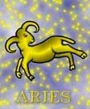

<html>
<head>
<title>Kos</title>
<script type="text/javascript" src="js/public.js"></script>
<script type="text/javascript" src="js/subpage.js"></script>
<script language="JavaScript1.1">
IMG_PICT="images/inte/horo/" 
horopict = ""
var subpage = new Array(
horopict+"Soha nem néz hátra, csak elõre, nem érdeklik a mellékkörülmények, mindig csak a cél lebeg a szeme elõtt. Nem mérlegel, nem habozik, hanem viharzik elõre, még akkor is, ha mindenki másnak nyilvánvaló, hogy fejjel rohan a falnak. Azt hihetnénk, hogy energiája kifogyhatatlan, de ez nem igaz, gyakran kimerül a saját maga diktálta hajszában, bár igen gyorsan talpra áll és máris rohan tovább. Bátorság, vakmerõség, merészség a fõbb jellemzõi. Indulatos, uralkodni vágyó, ha megpróbálják korlátozni, visszafogni unottá válik, csak lézeng, mindig elkedvetlenedik. Mindig van benne valami gyermeki, õszinte, álmodozó, diplomáciai érzéke nincs, Nem gyakorlatias. Nem tudja megkülönböztetni a kis célokat a nagyoktól, az értelmeseket az értelmetlentõl. Nem tûri a kritikát, szidást, azonnal ellentámadásba lendül. Rendkívül finoman, óvatosan kell vele bánni, sokat kell dicsérni, biztatni. Szívesen segít, de annyira a szárnyai alá veszi a segítségre szorulót, hogy szinte megfullad. Tûz-jegy, kardinális. Mivel minden jel kapcsolódik egy bolygóval is, az asztrológia azt tanítja, hogy a Kos jel uralkodó bolygólya a Mars. A minõségi keresztek közül a kardinális kereszthez tartozik. Eleme a tûz, férfiasság és aktivitás jellemzi. A kardinalitás miatt jellemzõ rá a céltudatosság, a vezetni akarás, túlzott formájában erõszakosság, rátartiság. ",
horopict+"A tûz elem által energia, tettrekészség, akarat, harciasság, másokra hatni akarás. Márciusban a természet a téli pihenõ után erõktõl duzzad. Mindenbõl az életigenlés árad. A természet lüktetõ erejét érezzük a Kosban. A Kos energiái hatni akarnak, õ az élet, a minden erõt magába fogadó. A Kos ezzel a hatalmas, duzzadó erõvel keresi azokat a lehetõségeket, ahol énségét valamilyen módon kihangsúlyozhatja. A Kos a dolgok kezdésében éli át önmaga fontosságát. Ezért másra kevésbé figyel, és minden kezdetben egy önmegméretési aktust lát. Ezért számára minden akadály egyértelmû kihívás, megméretés, tehát gondolkodás nélkül belevág. Õ csak gyõzhet. El sem tudja képzelni, hogy esetleg le is gyõzhetõ. Nem hátrál meg semmi elõl. Nem ismer kétséget önmagában, hiszen arra született, hogy bizonyítson. Egyik alapelve, hogy amit ma megtehetsz, ne halaszd holnapra. Mindennek elébe megy. Képtelen várni. Nincs türelme. Ahogy a legtöbb asztrológiai könyv írja, fejjel megy a falnak. Nem mérlegel, nem elemez, gondolkodás nélkül belevág, mert nem akar semmibõl kimaradni. Mivel õ a kezdet, így számára még minden tapasztalat egy új élmény, és ezért az élet számára nem más, mint az élménygyûjtések lehetõsége. De nemcsak a tettek embere, a szellemi dolgokban is ugyanilyen hévvel és lendülettel mélyed el, viszont amilyen elánnal fog hozzá bármihez, olyan hamar képes abbahagyni. ",
horopict+"Létének egyik fõ értelme, hogy sok mindent éljen át, tapasztaljon meg, tehát sok ideje nincs, ha egyetlen erõs rohammal elvégezte a rá váró feladatot, akkor azzal tovább nem foglalkozik, mert várja az új lehetõség, az új élmény és minden, ami az újdonság varázsával hat rá. A múlt sosem érdekli, hiszen elõtte áll a csábító jövõ. Élete örök száguldás, rohanás. Ezeknek a szavaknak: higgadtság, türelem, kitartás, megértés, tolerancia, értelmét nem fogja fel, hiszen nem képes várni. Egész élete olyan, mintha le akarna késni valahonnan ezért dupla erõbedobással rohannia kellene, hogy le ne maradjon valamirõl. A Kos nem ismer félmegoldásokat. A külvilág számára szimpatikus és ellenszenves közegbõl tevõdik össze. Az egyik oldalon a barátok, a másik oldalon az ellenségek állnak. A Kos könnyen barátkozik, és ezért gyakran a barátság is csak idõleges nála. Ez nem azt jelenti, hogy elfelejti a barátait, hanem azt, hogy bizonyos feladatok elvégzéséhez a társul hozzácsapódott emberekkel összebarátkozik. Majd a feladat elvégzése után új feladathoz lát, s a barátok elmaradnak. Az ellenségek csak addig ellenségek, míg a Kos útjában állnak. A harcban kíméletlen, de ha valaki békejobbot nyújt, azonnal képes megbocsátani. Ha valakit barátjává fogad, azért képes tûzbe menni. Áldozatot nem a dolog joviális aspektusáért hoz, hanem azért, mert ez így természetes. Ezzel sajnos könnyen vissza lehet élni. ",
horopict+"A Kos nem mérlegel, ha megkérik valamire, azonnal teljesíteni igyekszik, bármilyen nehéz a feladat, sõt a veszély még izgalmasabbá teszi a helyzetet, hiszen itt mutathatja meg igazán, hogy kicsoda is õ. Hajlamos túlzásokba bocsátkozni. Nincs igazi érzéke a mértékekhez. Nem érzi igazán a határokat. Sokkal nagyobb energiát használ el minden cselekedetéhez, mint amekkorára szükség van. De hát meg kell értenünk, hogy neki erõtöbblete van és fáradhatatlanul végzi el a feladatait. Vitalitása óriási. Könnyen kritizál másokat, de ha õt minõsítik - és nem elismerõen - azt nem bírja elviselni. Az õt ért bírálatok, még ha építõek is, haragot váltanak ki belõle. Nem lehet tudni, hogy mikor robban. Ha jobban meggondoljuk, ez érthetõ, hiszen az egész élete arra épül, hogy elismerést váltson ki másokból. A Kos képtelen diplomatikusan fogalmazni, élni. Gyakran a legnyersebb modorban hozza mások tudtára a nemtetszését. Mindig magából indul ki, nem képes megérteni, ha más erõtlen, vagy ugyanazt a feladatot lassabban végzi el. Hajlamos mindent magához mérni, de nem sportszerûtlen. Gyengékkel és erõtlenekkel õ nem versenyez, de rögtön segítséget nyújt, ha támogatását kérik. ",
horopict+"A Kos az igazi felfedezõ, az új utakon járó, a veszélyeket keresõ. Hajtja a vére, mindenbe beleavatkozik, abba is, amibe nem kéne, hozzászól olyasmihez, amirõl nem tud, értékel olyasmit, amihez nem ért, szentül meg van gyõzõdve arról, hogy neki mindig mindenben a legerõsebbnek, legokosabbnak, a legügyesebbnek kell lennie. A kos számára legfontosabb, hogy bebizonyíthassa: vezetésre termett, s hogy mindenütt, minden helyzetben meg tudja állni a helyét. A mindennapi harcban magáért a harcért, magáért a tevékenységért csinálja az egészet. Az élet különbözõ helyzeteiben láthatjuk, hogy amit el akar érni, azért óriási harcot folytat, de amikor elérte, már nem fontos számára. Megtartani nem tudja és nem is akarja. A Kos számára az élet a legizgalmasabb játék, de ha társasjátékot játszik, abban is ugyanúgy küzd, mintha élethalálharc lenne. Összegezve azt tapasztaljuk, hogy a Kos lénye gyermekien tiszta, semmi ravaszság, semmi szerepjátszás. Elve az, hogy gyõzzön az erõsebb. Egy eszméért, barátságért, egy nagy tettért képes akár az életét is feláldozni. Ellenségeivel szemben csak addig kíméletlen, míg a harc tart, de rögtön elfogadja a békejobbot, ha a másik megadja magát. A Kos nem elemez. A dolgokat olyanoknak látja, amilyenek, és nem hajlandó belemagyarázni, sem az ilyen magyarázatokat elfogadni. Minden jel több szinten is megnyilvánulhat. A Kos egyszerûbb, primitívebb szinten a garázda, a hetvenkedõ, az erõmûvész, a nagyhangú, a csibész. ",
horopict+"Könnyen brutálissá válnak. A Kos önmagát a legjobb vezetõnek tartja. A beosztottjai már nem annyira. Fáradhatatlan energiája, óriási munkabírása, a célfeladatok vagy rövid távú feladatok elvégzésére kiválóan alkalmas, de környezete nem mindig tud vele lépést tartani. A hosszan tartó feladatokba belefárad. Nincs kellõ koncepciója, ebbõl következik, hogy jobb, ha ezek kidolgozását másokra bízza. Ezek kivárására nincs türelme. Ez ellenkezni nem lehet vele, amit parancsba ad, azt végre kell hajtani. Meg kell különbõztetnünk az állandóan visszabeszélõ, mindenbe beleszóló, hepciáskodó Kos-embert, a parancsokat gyorsan végrehajtó, jó kezdeményezõkészségû és vállalkozó szellemû, de nem kitartó Kos-embertõl. Elsõsorban olyan feladatokat lát el az utóbbi, amelyek több-kevesebb önállóságot tételeznek fel. A Kos azt szereti, ha kiadják neki a feladatot, de nem szereti, ha a feladat végzése közben útmutatásokkal, észrevételekkel látják el. Ezeket fölösleges, hátráltató szócsépléseknek tartja. Legyen akár nõ, akár férfi, számára a legfontosabb, hogy a partner elismerje õt. Felnézzen rá. A szerelemben tiszta érzések vezetik, de nem szereti a sok beszédet, kitörést. Szeret hódítani, és a házasságban akkor ügyes a házastárs, ha mindig lehetõséget ad a Kosnak, hogy újból meghódíthassa. A Kos nõk férfiasak. Erotikában a Kos-ember a finomságokra érzéketlen, a vad, szenvedélyes szerelmet szereti. ",
horopict+"<b>Bolygója:</b> a Mars<br>"
+"<b>Eleme:</b> a tûz<br>"
+"<b>Természete:</b> kardinális<br>"
+"<b>Erényei:</b> nyílt, határozott, önálló, tettre kész, lendületes, nagyvonalú, bátor, természetszeretõ<br>"
+"<b>Hibái:</b> képtelen veszíteni, robbanékony, türelmetlen, nem kitartó, kötekedõ, nehéz vele együtt élni<br>"
+"<b>Testrésze:</b> a fej<br>"
+"<b>Betegségre való hajlam:</b> fejsérülések, fogíny- és állkapocsbetegségek, fejfájás, magas vérnyomásra való hajlam, fül- és szembetegségek, krónikus nátha, szénanátha<br>"
+"<b>Védõkövek:</b> gyémánt, hematit (helyettesíthetõ jáspis- heliotroppal),<br>"
+"<b>Szerencsekövek:</b> ametiszt, indiai karneol, gránát, rubin, a márciusiaknak ajánlott még az akvamarin, az áprilisiaknak a hegyikristály"
);
</script>
</head>
<BODY background="images/public/background/bg1.jpg">
<script language="JavaScript1.1">
	firstdraw("KOS március 21. - április 20.");
</script>
</body>
</html>